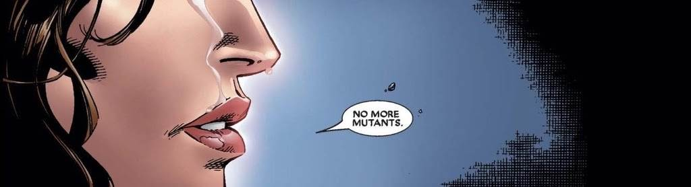

House of M erschien 2005, geschrieben von Brian Michael Bendis und gezeichnet von Olivier Coipel. Die Serie umfasst 8 Ausgaben und zeigt, wie Wanda Maximoff eine alternative Realität erschafft, in der Mutanten dominieren. Die Ereignisse münden in den berühmten Satz: „No more mutants.“
Zurück zur echten Welt
Diese Welt behalten
Vergessen, was war